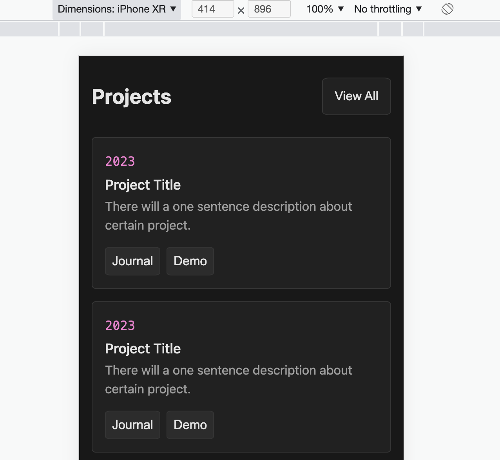

16/04/2023 (Sunday) - First day of creating portfolio website -
Folder Structure & website variables
Today I finally start creating my own personal website. That will be
my long-term project. Website that will showcase my skills,
experience, projects and overall commitment for programming and
improving my life overall.
I will start off by making sure that the folder structure is
adjusted to my needs. Here is the project structure I will start
with:
portfolio-website/
│ index.html
│
├───about/
│ about.html
│
├───it-journal/
│ │ it-journal.html
│ │
│ └───html-css/
│ html-css.html
│
├───personal-journal/
│ personal-journal.html
│
├───css/
│ main.css
│ (other CSS files)
│
├───js/
│ main.js
│ (other JavaScript files)
│
└───assets/
├───images/
(image files)
17/04/2023 (Monday) - Building a Responsive Navigation
Today, I started working on a responsive navigation for my website.
For screens smaller than 700px wide, I designed a simple yet
aesthetic navigation menu with five sections: Home, About, IT Blog,
Projects, and Github. These sections are aligned to the left side of
the panel. On the right side, I added a moon icon that serves as a
toggle button. In the future, this button will enable users to
switch the website's color scheme between day and night modes.
For larger screens, I created an expanded version of the navigation.
My name is displayed at the top of the navigation and will act as a
link to the homepage in the future, so I removed the Home section
from the menu. The moon icon remains the same but is slightly larger
to accommodate the larger screen size.

18/04/2023 (Tuesday) - Developing the "About Me" Section
Today, I made a progress on my website by creating a responsive
"About Me" section that appears right after the navigation panel.
This section serves as an introduction to my portfolio website and
journal. I've also included an image of a Jiu-Jitsu white belt. The
idea is to update this image as I achieve higher belt rankings – for
instance, when I earn my blue belt next year, I'll update the image
accordingly. Check out the demonstration of the page's
responsiveness below.

19/04/2023 (Wednesday) - Building the "Latest Posts" Section
Today, I developed a section dedicated to showcasing my latest
journal entries. Each entry in the "Latest Posts" section will
display the title and creation date of the corresponding post. For
example, the title "Creating the 'Latest Posts' Section" would
appear along with its date. I also added a small icon to the left of
the date, helping to visually differentiate the types of work or
projects I've been involved in on a specific day. In the future, I
plan to retrieve this data from an API connected to an AWS database.
This way, I won't have to manually update the content on a daily
basis, streamlining the process and making it more efficient.

20/04/2023 (Thursday) - Building the "Projects" Section
Today, my coding time was limited due to work and taking care of my
5-year-old niece. However, I managed to create a section that
showcases my recent projects throughout my career. Each project will
feature its unique creation year, title, a brief description, and
two buttons linking to the project's journal entries, detailing my
daily progress, and a demo of the project. Below is the final
visualization of the section, displaying two containers in a small
resolution (optimized for smartphones).

21/04/2023 (Friday) - Adding responsiveness to the Projects section
Today, I successfully added responsiveness to my Projects section.
To achieve this, I used 'display: grid' to create three columns of
project containers in each row when the screen width reaches 700 px.
Now, whenever a new project is added, the section automatically
places it in a new row after there are already three projects in the
previous row.
22/04/2023 (Saturday) - Wrapping Up the Home Page with a Minimalist
Footer
Today, I completed the development of the home page by adding a
simple footer. The footer includes my contact information such as
LinkedIn, Gmail, phone number, and GitHub. To enhance user
experience, I incorporated png images for a more visually engaging
interaction with the footer.
01/05/2023 (Monday) - Crafting the 'Articles' Section
I haven't posted for the last 8 days, but I've been working on my
project every day, making daily commits to GitHub. During this time,
I finished my home page, projects page, and about page.
I just completed a layout tile that displays information about the
ongoing development of the website. I decided to include this since
I shared my portfolio website in my contact info on LinkedIn. This
way, if an interviewer visits my site, they'll understand that it's
still a work in progress, which may help explain any issues or
"blank spaces."

Now, my focus is on the "Articles" page. I plan to keep this page
simple and free of unnecessary information. It will contain all the
lessons I'll be teaching myself throughout my career. As the page
will feature dozens of articles, I want to keep it organized and
tidy. It will be divided by year and include basic article details
(title and posting date). The layout will look similar to the
picture below:
The Articles page structure is now complete. Here are the results
for both smaller and larger screen resolutions:
Creating the "IT Journal" Page (May 2, 2023)
Introduction
Today, I successfully created the final page in the menu called "IT
Journal." This page will showcase my development journey and the
progress I've made on various projects. By clicking on each tile,
its content will be displayed.
Tasks Completed
- Finished "IT-Journal" Page
Challenges Faced
-
Challenge 1:
Adding text to the bottom of the tile, ensuring that the text
fades away as it approaches the end of the tile.
Learnings
-
Learning 1:
Learned how to create fading text. To create fading text, it's
important to:
- Set the position: relative on the element.
- Add ::after property on that element.
-
Add position absolute, set the fade to the bottom, set the
height (from where the fade will start), and add a background
image (linear gradient that starts from the bottom and goes to
the top).
Visuals

Refactoring and Commenting Code for Better Structure (May 3, 2023)
Introduction
I've reached a point where my code is not well-structured, which
makes scaling and adding new pages time-consuming. Any change I make
affects the overall website structure. To improve this, I need to
add comments to my code and refactor it for better organization.
I'll start with the dates on my home page.
Tasks Completed
-
Refactored dates by adding the "date-item" class for every element
containing a date
-
Created a separate file and placed it in the "general" folder for
easier code reuse
Challenges Faced
-
Challenge 1:
This task wasn't too complicated, but it required identifying all
elements with similar properties, removing redundant code, and
creating a separate class for reusable code. This process was
somewhat time-consuming.
Learnings
-
Learning 1:
I learned that to create a scalable website, it's crucial to add
sufficient comments and as many reusable classes as possible. This
not only helps with future expansion but also makes the code more
readable.
Creating a tile for every journal entry in my website (May 8 2023)
Introduction
An idea about posting my journals popped into my mind. I want to
create an easy-to-read and simple tile for my every entry in my
journal. That tile will contain smaller ones (usually 4) that have
titles: Introduction, Tasks Completed, Challanges Faced, Resources.
The big article tile will have a bit title and posted date.
Tasks Completed
-
New classes added, "rozbudowując" and adding specific classes for
already existing it-journal structure
Challenges Faced
-
Challenge 1:
I was working on already existing structure of general
"it-journal" page because I wanted to have very similar structure.
Problem occured when I tried to get rid of default properties for
title of the journal entry. I found out there is a way to do it by
specific events for "pointer-events" and "cursor"
Learnings
-
Learning 1:
I learned some new CSS properties. pointer-events: none; -> That
prevents "< a >" to have link properties